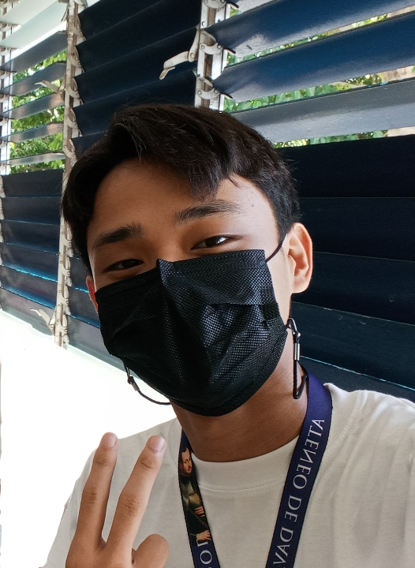

Institution Home Page
Partner Institution Profile
Address: Dona Vicenta Village, Panganiban, Corner Sputnik St, Bajada, Davao City, 8000 Davao del Sur
Contact Person/s: Lenity Australia
Contact Number/s: (082) 287 4653
Mission: Talikala, Inc. is a non governmental organization run by women to serve women. Its advocacy is to improve the quality of life of women who were involved in human sex trafficking and prostitution in the Philippines. The organization’s primary beneficiaries are that it offers support, advice, training, and counseling to women and girls who have been forced into sex trades around Davao City. They offer these services to women and girls so that once rehabilitated, they will be able to assert their rights and regain their dignity in society.
History: The institution, made in 1987 founded by women (Elizabeth O’Brian, Cindy O’Donnell, Felicidad Prieto) to support women, was made to protect women and children from HIV/AIDS, since it mostly affect women and children through human trafficking and prostitution. 30 years on, the service of not only protection but counseling and therapy, had helped over an average of 200 women per year. Also adding multiple programs and organizations while spreading awareness. The time stops of 1993, 1995, and 1996, a supported organization of the institution had expanded to Davao City, Cagayan de Oro City, and General Santos City which led to the organization to become independent and self-supported. Plus the organized group of men as partners in intention to spread awareness. In result of 30 years of selfless service, ADDU had presented them an award proudly, and is still active today.
Organizer: The people that founded the institution were Cindy O’Donnell an American lay missionary, Elizabeth O’ Brien an Filipina Social worker, and Felicidad Prieto an former night club dancer. Talikala, Inc. was founded on August 7, 1987 by this three women and these was founded to help these exploited women establish new lives after prostitution, empowering them to break free from the figurative chains of their literal enslavement. Improving the quality of life of women prostitute and survivors of prostitution was their aim. They aspire to help protect the prostituted women and children in Davao City and also aiming to respond to the challenge of totally emancipating these exploited women and children from the bondage of human trafficing and prostitution.
Beneficiaries: The context of people admitted in the institution kindly shared by Executive Director, Jeanette L. Ampog, (Said through email) “The most common problems that women shared to Talikala are Reproductive health problems like unplanned pregnancy, sexually transmitted infections, food, medicine, educational assistance and abuses.” For a little generalized background, between 60,000 and 100,000 Filipino children are impacted by labor trafficking or sex trafficking (not just women), In 2020, the number of victims of rape in the Philippines reached 2,168, six cases more than in the previous year. 71% of trafficking victims around the world are women and girls and 29% are men and boys. Thus making the people admitted to the institution mostly exploited people that are sent to be healed through support, advice, training, and counseling.
Benefactors: One of the organizations that support Talikala, inc. is Lenity Australia, it is a not-for-profit philanthropic organization for financing projects in Australia, Asia, and the Pacific. It contributes to Talikala, inc. by supporting the programs in 7 barangays for the next 3 years, they do this because they see it as providing a positive opportunity to advance the war against poverty and gender equality. Lenity Australia not only supports this one organization, it supports many more such as Jesuit Social services, St. Vincent de Paul Society, Australian Marist Soliditary, and more. In conclusion Lenity Australia is one of the best supporters for organizations and can be well trusted because of its history and how it helps organizations.
About the Web Designer:

Ramon Roberto N. Garcia from Grade 9 - Gonzaga was born in Davao City, he grew up in the same city together with his family of 5. He entered the Ateneo de Davao University when he was still in Nursery and worked hard to become an Honors Student. Along with just being a student, he is a part of the chess club in his school. Ramon is a naturally curious person who has a lot of questions about his partner institution, Talikala Inc. He made it one of his goals to better understand his institution within the school year.